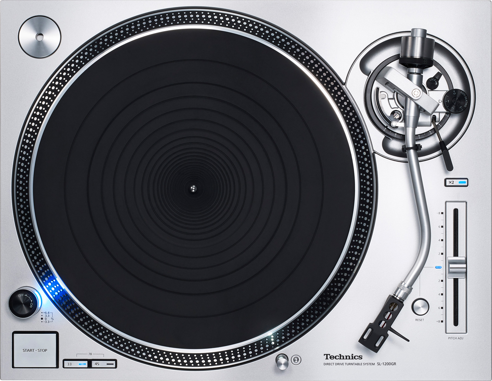

I Like It Retro - The other MP3 Player
Search
Your Vinyl Case
AudioKoppler
- Deep Minimal Set 2018
(
Copyright
-
Think Techno/ Tiefgang Sound
)
Energy 52
- Café del Mar[M. Woods Remix]
(
Copyright
-
Energy 52
)
This NEW Player Texture will be updated soon...
aswell the complete layout and new SETS!
